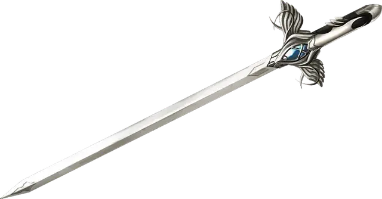

Танцующий меч
Dancing Sword
Оружие (любой меч), очень редкое (требуется настройка)

Рекомендованная стоимость 5 001-50 000 зм
Вы можете бонусным действием бросить этот магический меч в воздух и произнести командное слово. После этого меч начнёт парить, пролетает до 30 футов и атакует одно существо на ваш выбор в пределах 5 футов от него. Меч использует ваш бросок атаки и ваш модификатор характеристики для броска урона.
Пока меч парит, вы можете бонусным действием заставить его перелететь на расстояние 30 футов в другое место, находящееся в пределах 30 футов от вас. Частью этого же бонусного действия вы можете заставить меч атаковать одно существо, находящееся в пределах 5 футов от него.
После того как парящий меч совершит четвёртую атаку, он пролетает до 30 футов и пытается вернуться в вашу руку. Если у вас нет свободных рук, он падает на землю у ваших ног. Если у меча нет свободного пути до вас, он перемещается максимально близко к вам и потом падает на землю. Он перестаёт парить, если вы хватаете его или перемещаетесь более чем на 30 футов от него.